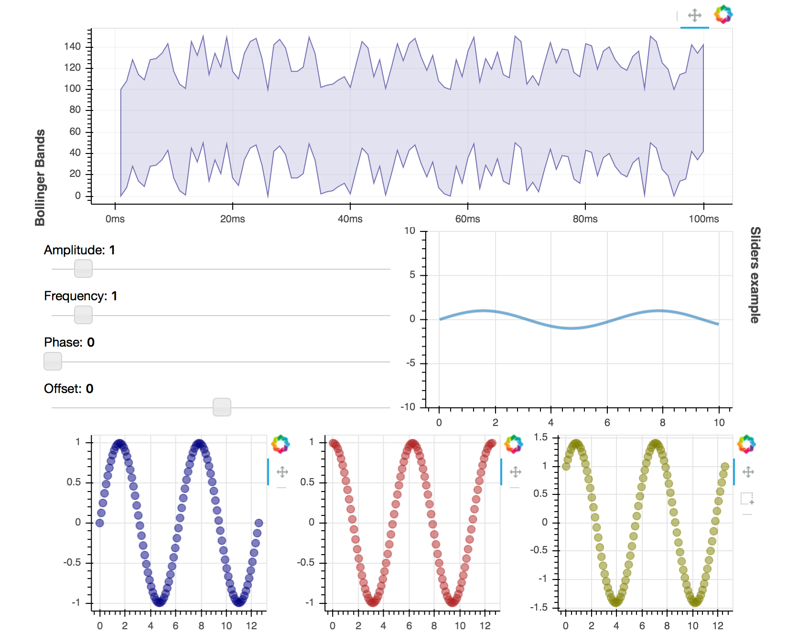

Laying out Plots and Widgets¶
Bokeh includes several layout options for arranging plots and widgets. They aim
to make it quick to create your interactive data applications. At the heart of
the layouts are three core objects Row, Column, and WidgetBox. While you can
use these models directly, we recommend using the layout functions row(),
column(), and widgetbox().
The layout functions let you build a grid of plots and widgets. You can nest as many rows, columns, and plots together as you’d like. In addition, Bokeh layouts support a number of “sizing modes”. These sizing modes allow plots and widgets to resize based on the browser window.
There are two things to keep in mind for best results using layout:
- All items must have the same sizing mode.
- Widgets should be inside a widget box.
These guidelines are explained in more detail below:
- Consistent sizing mode
- Everything item in a layout must have the same sizing mode for the layout to behave as expected. It is for this reason that we recommend using the layout functions as they help ensure that all the children of the row or column have the same sizing mode. We hope to lift this restriction in future releases.
- Widget boxes
- Widgets are HTML objects like buttons, and dropdown menus. They
behave slightly differently to plots and and putting them in a widgetbox
is necessary so that they can all work together. In fact, if you try and
put a
WidgetinRoworColumnit will be automatically put into aWidgetBox. As a result, it’s a good idea to wrap your own widgets in a``WidgetBox`` usingwidgetbox()as then you can be sure about how your widgets are getting arranged.
Columns¶
To display plots or widgets in a vertical fashion, use the column() function:
from bokeh.io import output_file, show
from bokeh.layouts import column
from bokeh.plotting import figure
output_file("layout.html")
x = list(range(11))
y0 = x
y1 = [10 - i for i in x]
y2 = [abs(i - 5) for i in x]
# create a new plot
s1 = figure(width=250, plot_height=250, title=None)
s1.circle(x, y0, size=10, color="navy", alpha=0.5)
# create another one
s2 = figure(width=250, height=250, title=None)
s2.triangle(x, y1, size=10, color="firebrick", alpha=0.5)
# create and another
s3 = figure(width=250, height=250, title=None)
s3.square(x, y2, size=10, color="olive", alpha=0.5)
# put the results in a column and show
show(column(s1, s2, s3))
Rows¶
To display plots horizontally, use the row() function.
from bokeh.io import output_file, show
from bokeh.layouts import row
from bokeh.plotting import figure
output_file("layout.html")
x = list(range(11))
y0 = x
y1 = [10 - i for i in x]
y2 = [abs(i - 5) for i in x]
# create a new plot
s1 = figure(width=250, plot_height=250, title=None)
s1.circle(x, y0, size=10, color="navy", alpha=0.5)
# create another one
s2 = figure(width=250, height=250, title=None)
s2.triangle(x, y1, size=10, color="firebrick", alpha=0.5)
# create and another
s3 = figure(width=250, height=250, title=None)
s3.square(x, y2, size=10, color="olive", alpha=0.5)
# put the results in a row
show(row(s1, s2, s3))
Widgets¶
Layout a group of widgets with the widgetbox() function.
from bokeh.io import output_file, show
from bokeh.layouts import widgetbox
from bokeh.models.widgets import Button, RadioButtonGroup, Select, Slider
output_file("layout_widgets.html")
# create some widgets
slider = Slider(start=0, end=10, value=1, step=.1, title="Slider")
button_group = RadioButtonGroup(labels=["Option 1", "Option 2", "Option 3"], active=0)
select = Select(title="Option:", value="foo", options=["foo", "bar", "baz", "quux"])
button_1 = Button(label="Button 1")
button_2 = Button(label="Button 2")
# put the results in a row
show(widgetbox(button_1, slider, button_group, select, button_2, width=300))
Grids Layout for Plots¶
The gridplot() function can be used to arrange
Bokeh Plots in grid layout. gridplot() also collects all
tools into a single toolbar, and the currently active tool is the same
for all plots in the grid. It is possible to leave “empty” spaces in
the grid by passing None instead of a plot object.
from bokeh.io import output_file, show
from bokeh.layouts import gridplot
from bokeh.palettes import Viridis3
from bokeh.plotting import figure
output_file("layout_grid.html")
x = list(range(11))
y0 = x
y1 = [10 - i for i in x]
y2 = [abs(i - 5) for i in x]
# create three plots
p1 = figure(width=250, plot_height=250, title=None)
p1.circle(x, y0, size=10, color=Viridis3[0])
p2 = figure(width=250, height=250, title=None)
p2.triangle(x, y1, size=10, color=Viridis3[1])
p3 = figure(width=250, height=250, title=None)
p3.square(x, y2, size=10, color=Viridis3[2])
# make a grid
grid = gridplot([[p1, p2], [None, p3]])
# show the results
show(grid)
For convenience you can also just pass a list of plots, and specify the number of columns you want in your grid. For example,
gridplot([[s1, s2], [s3, None]])
and
gridplot([s1, s2, s3], ncols=2)
are equivalent. In addition, you can pass in plot_width and
plot_height arguments, and this will set the size of all your plots.
Note
You cannot use None with the ncols argument. It must only be a list
of Plot objects at once.
from bokeh.io import output_file, show
from bokeh.layouts import gridplot
from bokeh.palettes import Viridis3
from bokeh.plotting import figure
output_file("layout_grid_convenient.html")
x = list(range(11))
y0 = x
y1 = [10 - i for i in x]
y2 = [abs(i - 5) for i in x]
# create three plots
s1 = figure()
s1.circle(x, y0, size=10, color=Viridis3[0])
s2 = figure()
s2.triangle(x, y1, size=10, color=Viridis3[1])
s3 = figure()
s3.square(x, y2, size=10, color=Viridis3[2])
# make a grid
grid = gridplot([s1, s2, s3], ncols=2, plot_width=250, plot_height=250)
# show the results
show(grid)
General Grid Layout¶
The layout() function can be used to arrange both Plots and Widgets in a grid,
generating the necessary row() and column() layouts automatically. This allows
for quickly spelling a layout like this:
l = layout([
[bollinger],
[sliders, plot],
[p1, p2, p3],
], sizing_mode='stretch_both')
Which produces the following layout:
{kind=link}
The full code for this plot is available at examples/howto/layouts/dashboard.py in the project GitHub repository.